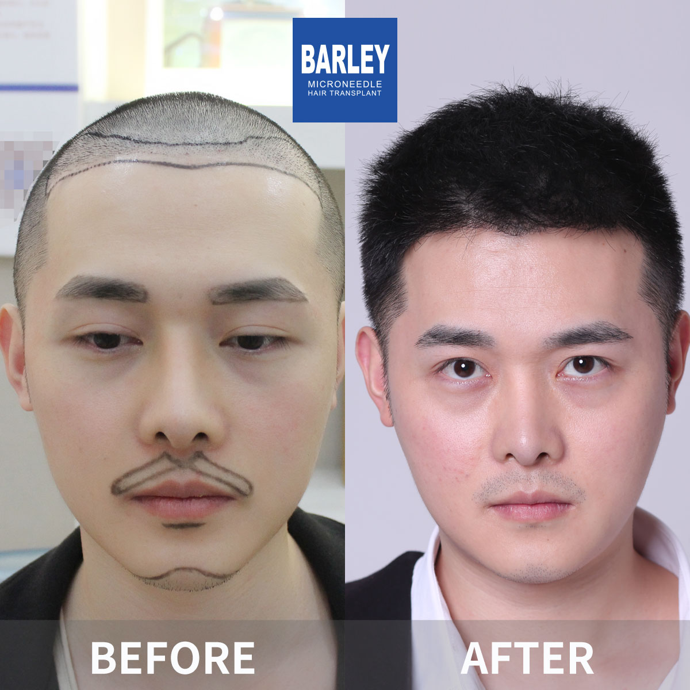
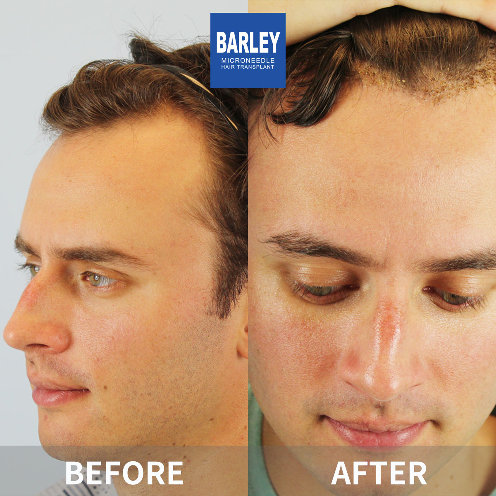
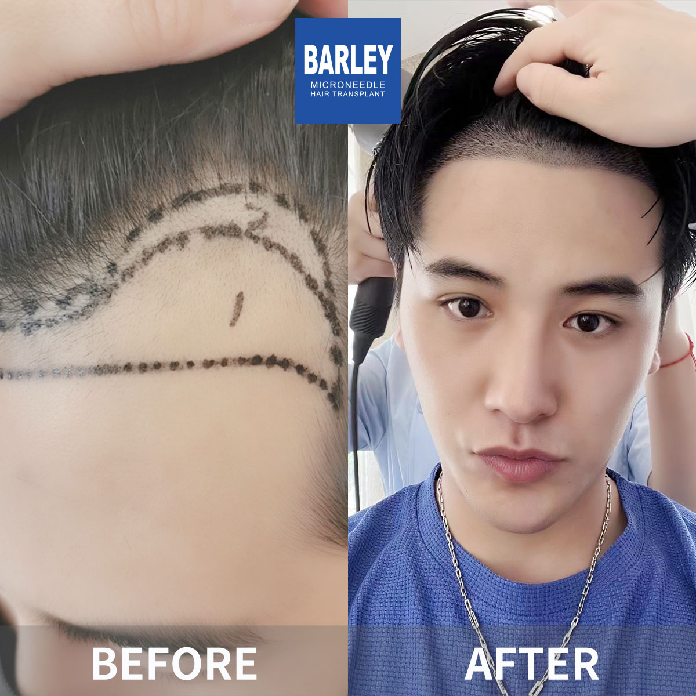
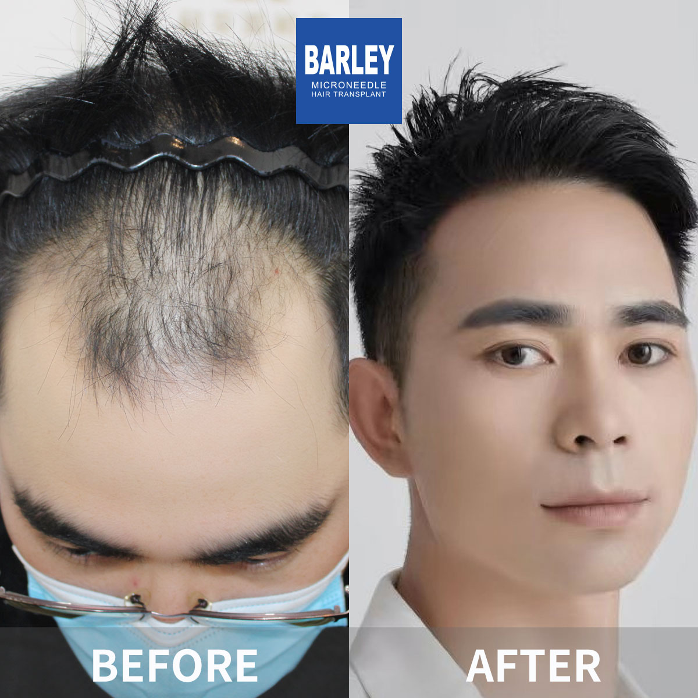
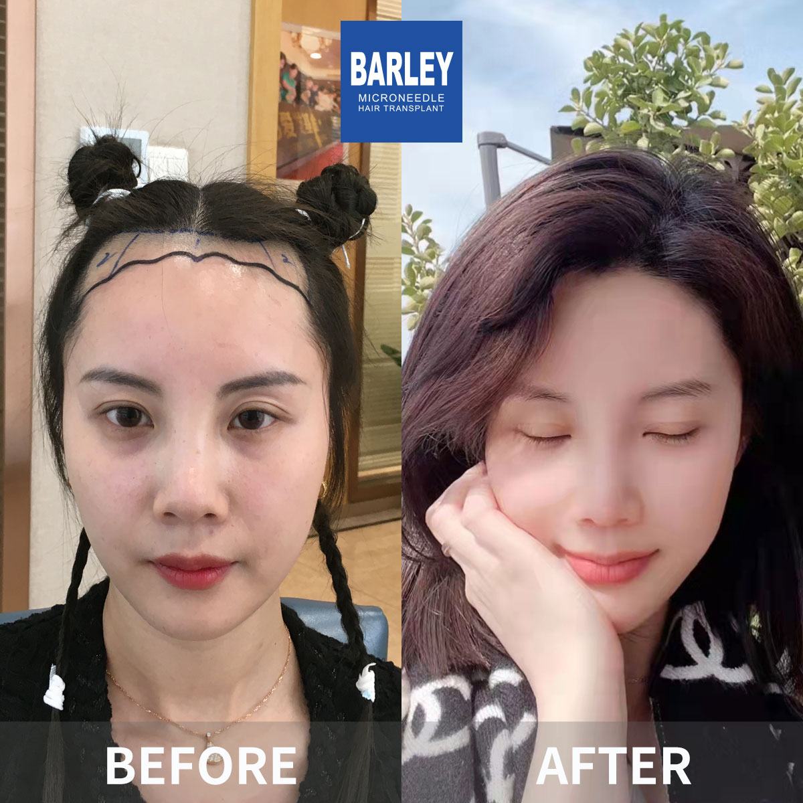
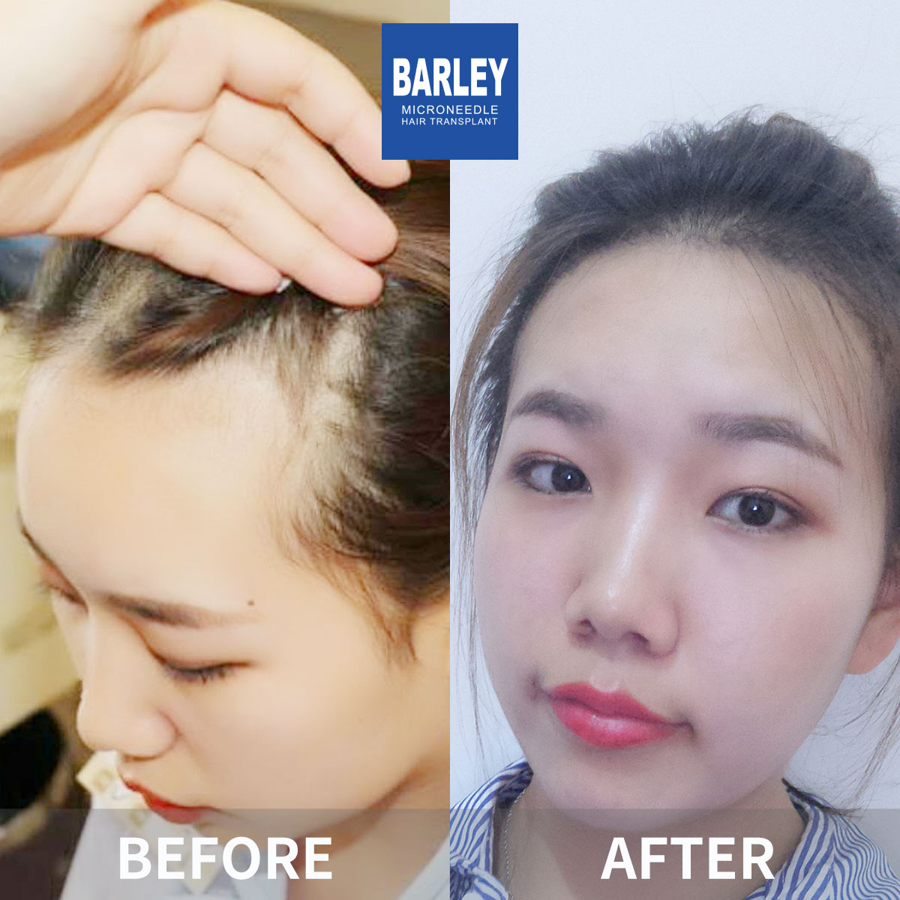
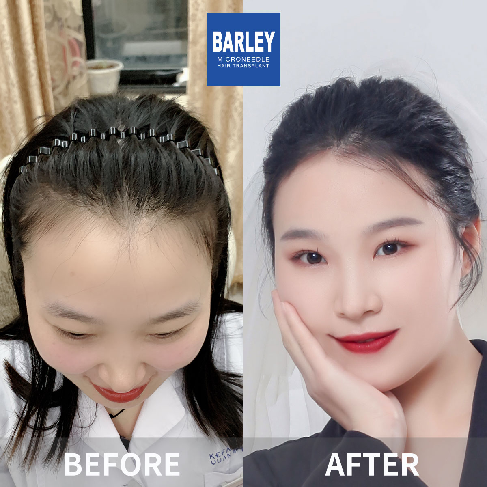
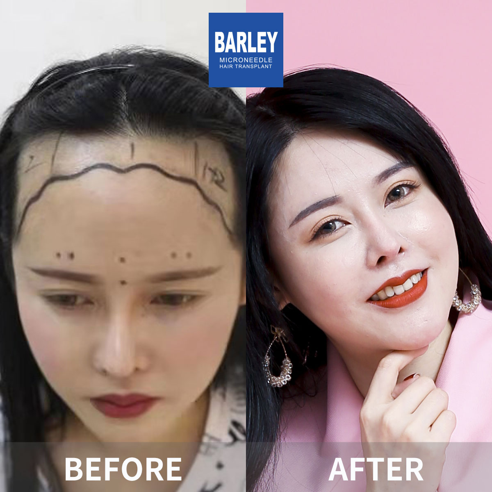

See before and after photos from our satisfied patients. Natural-looking hair restoration results.
See the notable transformations our patients have experienced

























Take the first step towards a fuller, healthier head of hair. Schedule your free consultation today.
Everyone's hair loss journey and solution are unique due to a variety of factors. Our hair restoration experts will assist you in determining the root cause and a suitable solution for your hair restoration plan. If you have any questions, please ask; we are happy to assist.
15810155700
+86 13730143529
hairtransplant@qq.com